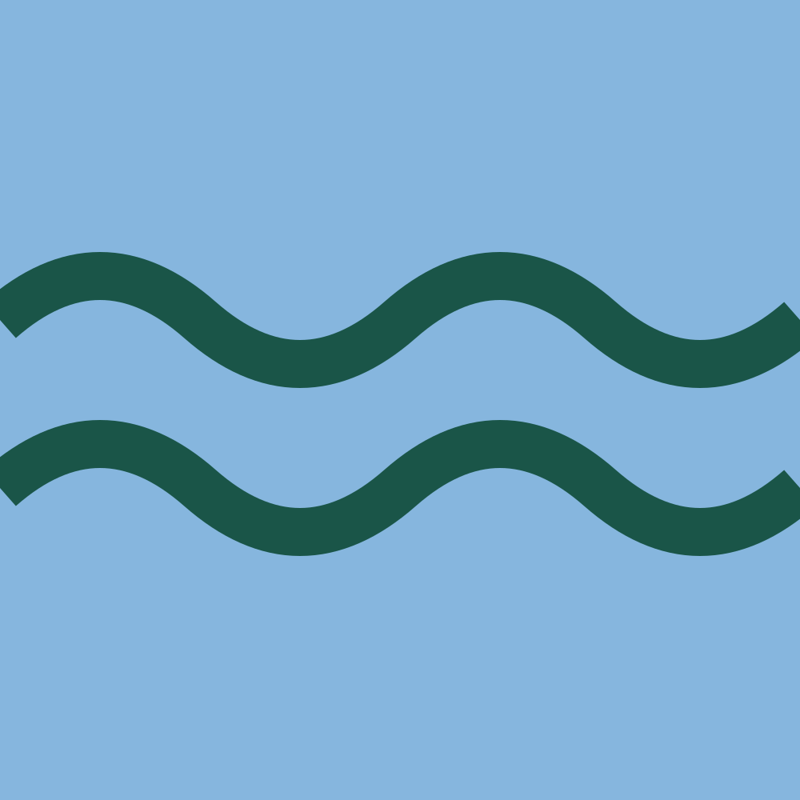
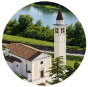

Domenica 13 dicembre

Una giornata di gravel, Natale e convivialità.
44 km attorno a Motta di Livenza

Partenza
9.30–10.30Libera, quando vuoi nella fascia orariaRistoro
Piazza LuzzatiNel centro di Motta di Livenza
Arrivo
Pasta PartyAl rientro, tutti insiemePartenza e arrivo
Area festeggiamentiVillanova di Motta di LivenzaIscrizioni · quota 15 €
Online o da Cicli ZabelIn negozio, oppure con il modulo onlineOrganizzano


In collaborazione con



Locandina A3 (297×420 mm) con 3 mm di abbondanza, ridotta. PDF: stampa/Locandina-GravelRide-A3.pdf.